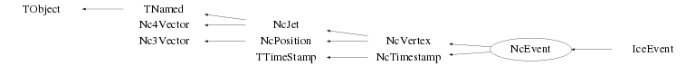

class NcEvent: public NcVertex, public NcTimestamp
Class NcEvent Creation and investigation of an NCFS generic event structure. An NcEvent can be constructed by adding NcTracks, NcVertices, NcJets and/or devices like NcCalorimeters or NcDevice (derived) objects. All objects which are derived from TObject can be regarded as a device. However, NcDevice (or derived) objects profit from additional hit handling facilities. A "hit" is a generic name indicating an NcSignal (or derived) object. Note that NcEvent does NOT own hits; it only provides references to hits obtained from the various devices. This implies that hits should be owned by the devices themselves. The basic functionality of NcEvent is identical to the one of NcVertex. So, an NcEvent may be used as the primary vertex with some additional functionality compared to NcVertex. To provide maximal flexibility to the user, the two modes of track/jet/vertex storage as described in NcJet and NcVertex can be used. In addition an identical structure is provided for the storage of devices like NcCalorimeter objects, which can be selected by means of the memberfunction SetDevCopy(). a) SetDevCopy(0) (which is the default). Only the pointers of the 'added' devices are stored. This mode is typically used by making studies based on a fixed set of devices which stays under user control or is kept on an external file/tree. In this way the NcEvent just represents a 'logical structure' for the physics analysis. Note : Modifications made to the original devices also affect the device objects which are stored in the NcEvent. b) SetDevCopy(1). Of every 'added' device a private copy will be made of which the pointer will be stored. In this way the NcEvent represents an entity on its own and modifications made to the original calorimeters do not affect the NcCalorimeter objects which are stored in the NcEvent. This mode will allow 'adding' many different devices into an NcEvent by creating only one device instance in the main programme and using the Reset() and parameter setting memberfunctions of the object representing the device. Note : The copy is made using the Clone() memberfunction. All devices (i.e. classes derived from TObject) have the default TObject::Clone() memberfunction. However, devices generally contain an internal (signal) data structure which may include pointers to other objects. Therefore it is recommended to provide for all devices a specific copy constructor and override the default Clone() memberfunction using this copy constructor. Examples for this may be seen from NcCalorimeter, NcSignal and NcDevice. See also the documentation provided for the memberfunction SetOwner(). Coding example to make an event consisting of a primary vertex, 2 secondary vertices and a calorimeter. vp contains the tracks 1,2,3 and 4 (primary vertex) v1 contains the tracks 5,6 and 7 (sec. vertex) v2 contains the jets 1 and 2 (sec. vertex) NcEvent evt; Specify the event object as the repository of all objects for the event building and physics analysis. evt.SetDevCopy(1); evt.SetTrackCopy(1); Fill the event structure with the basic objects NcCalorimeter emcal1; NcCalorimeter emcal2; ... // code to fill the emcal1 and emcal2 calorimeter data evt.AddDevice(emcal1); evt.AddDevice(emcal2); // Assume NcTOF has been derived from NcDevice NcTOF tof1; NcTOF tof2; ... // code to fill the tof1 and tof2 data evt.AddDevice(tof1); evt.AddDevice(tof2); NcTrack* tx=new NcTrack(); for (Int_t i=0; i<10; i++) { ... // code to fill the track data evt.AddTrack(tx); tx->Reset(); } if (tx) { delete tx; tx=0; } Order and investigate all the hits of all the TOF devices TObjArray* hits=evt.GetHits("NcTOF"); TObjArray* orderedtofs=evt.SortHits(hits); Int_t nhits=0; if (orderedtofs) nhits=orderedtofs->GetEntries(); for (Int_t i=0; i<nhits; i++) { NcSignal* sx=(NcSignal*)orderedtofs->At(i); if (sx) sx->Data(); } Order and investigate all the hits of all the calorimeter devices TObjArray* hits=evt.GetHits("NcCalorimeter"); TObjArray* orderedcals=evt.SortHits(hits); Int_t nhits=0; if (orderedcals) nhits=orderedcals->GetEntries(); for (Int_t i=0; i<nhits; i++) { NcSignal* sx=(NcSignal*)orderedcals->At(i); if (sx) sx->Data(); } Build the event structure (vertices, jets, ...) for physics analysis based on the basic objects from the event repository. NcJet j1,j2; for (Int_t i=0; i<evt.GetNtracks(); i++) { tx=evt.GetTrack(i); ... // code to fill the jet data } NcVertex vp; tx=evt.GetTrack(1); vp.AddTrack(tx); tx=evt.GetTrack(2); vp.AddTrack(tx); tx=evt.GetTrack(3); vp.AddTrack(tx); tx=evt.GetTrack(4); vp.AddTrack(tx); Float_t rp[3]={2.4,0.1,-8.5}; vp.SetPosition(rp,"car"); NcVertex v1; tx=evt.GetTrack(5); v1.AddTrack(tx); tx=evt.GetTrack(6); v1.AddTrack(tx); tx=evt.GetTrack(7); v1.AddTrack(tx); Float_t r1[3]={1.6,-3.2,5.7}; v1.SetPosition(r1,"car"); NcVertex v2; v2.SetJetCopy(1); v2.AddJet(j1); v2.AddJet(j2); Float_t r2[3]={6.2,4.8,1.3}; v2.SetPosition(r2,"car"); Specify the vertices v1 and v2 as secondary vertices of the primary vp.SetVertexCopy(1); vp.AddVertex(v1); vp.AddVertex(v2); Enter the physics structures into the event evt.SetVertexCopy(1); evt.AddVertex(vp,0); The jets j1 and j2 are already available via sec. vertex v2, but can be made available also from the event itself if desired. NcJet* jx; jx=v2.GetJet(1); evt.AddJet(jx,0); jx=v2.GetJet(2); evt.AddJet(jx,0); evt.Data("sph"); v1.ListAll(); v2.List("cyl"); Float_t etot=evt.GetEnergy(); Nc3Vector ptot=evt.Get3Momentum(); Float_t loc[3]; evt.GetPosition(loc,"sph"); NcPosition r=v1.GetPosition(); r.Data(); Int_t nt=v2.GetNtracks(); NcTrack* tv=v2.GetTrack(1); // Access track number 1 of Vertex v2 evt.List(); Int_t nv=evt.GetNvtx(); NcVertex* vx=evt.GetVertex(1); // Access primary vertex Float_t e=vx->GetEnergy(); Float_t M=evt.GetInvmass(); Reconstruct the event from scratch evt.Reset(); evt.SetNvmax(25); // Increase initial no. of sec. vertices ... // code to create tracks etc... Note : By default all quantities are in meter, GeV, GeV/c or GeV/c**2 but the user can indicate the usage of a different scale for the metric and/or energy-momentum units via the SetUnitScale() and SetEscale() memberfunctions, respectively. The actual metric and energy-momentum unit scales in use can be obtained via the GetUnitScale() and GetEscale() memberfunctions. --- Author: Nick van Eijndhoven 27-may-2001 Utrecht University - Modified: NvE $Date: 2016-09-01 18:50:25 +0200 (Thu, 01 Sep 2016) $
Function Members (Methods)
public:
protected:
| void | NcJet::AddTrack(NcTrack& t, Int_t copy) |
| void | NcJet::AddTrack(NcTrack* t, Int_t copy) |
| virtual void | TObject::DoError(int level, const char* location, const char* fmt, va_list va) const |
| Double_t | Nc4Vector::GetScaLong() |
| Double_t | Nc4Vector::GetScaTrans() |
| void | NcVertex::Init() |
| void | LoadHits(const char* classname, TObjArray* hits = 0) |
| void | TObject::MakeZombie() |
| void | NcJet::RemoveTrack(NcTrack* t, Int_t compress) |
| void | NcJet::SetNtinit(Int_t n = 2) |
Data Members
public:
| enum TObject::EStatusBits { | kCanDelete | |
| kMustCleanup | ||
| kObjInCanvas | ||
| kIsReferenced | ||
| kHasUUID | ||
| kCannotPick | ||
| kNoContextMenu | ||
| kInvalidObject | ||
| }; | ||
| enum TObject::[unnamed] { | kIsOnHeap | |
| kNotDeleted | ||
| kZombie | ||
| kBitMask | ||
| kSingleKey | ||
| kOverwrite | ||
| kWriteDelete | ||
| }; |
protected:
| TObjArray* | NcVertex::fConnects | Array to hold the pointers to the auto-generated connecting tracks |
| Int_t | fDevCopy | Flag to denote creation of private copies of the devices |
| TObjArray* | fDevices | Array to hold the pointers to the various devices |
| TObjArray* | fDevs | ! Temp. array to hold references to user selected devices |
| TObject* | fDisplay | ! Temp. pointer to hold objects which serve event displays |
| Double32_t | Nc4Vector::fDresult | ! The error on the scalar result of an operation (e.g. dotproduct) |
| Double32_t | Nc3Vector::fDresult | ! Error on scalar result (e.g. norm or dotproduct) |
| Double_t | NcTimestamp::fDut | The value of UT-UTC in seconds at the moment of the timestamp |
| Double32_t | Nc4Vector::fDv0 | The error on the scalar part |
| Double32_t | Nc4Vector::fDv2 | The error on the Lorentz invariant |
| Float_t | NcJet::fEscale | The scale of the energy/momentum units of the jet |
| Int_t | fEvent | The event number |
| TObjArray* | fHits | ! Temp. array to hold references to the registered NcDevice hits |
| Int_t | NcVertex::fJetCopy | Flag to denote creation of private copies in fJets |
| TObjArray* | NcVertex::fJetTracks | Array to hold the pointers to tracks introduced by jet addition |
| TObjArray* | NcVertex::fJets | Array to hold the pointers to the jets |
| Int_t | NcTimestamp::fJns | Remaining fractional number of seconds (in nanoseconds) elapsed within the MJD |
| Int_t | NcTimestamp::fJps | Remaining fractional number of nanoseconds (in picoseconds) elapsed within the MJD |
| Int_t | NcTimestamp::fJsec | Number of seconds elapsed within the MJD |
| Int_t | NcTimestamp::fLeap | The cumulated number of leap seconds at the moment of the timestamp |
| TObjArray* | NcVertex::fLines | ! Array to (temporarily) store the 3D lines for the event display |
| Int_t | NcTimestamp::fMJD | Modified Julian Date |
| TString | TNamed::fName | object identifier |
| Int_t | NcVertex::fNjets | The number of jets |
| Int_t | NcVertex::fNjmax | The maximum number of jets |
| Int_t | NcJet::fNtinit | The initial max. number of tracks for this jet |
| Int_t | NcJet::fNtmax | The maximum number of tracks for this Jet |
| Int_t | NcJet::fNtrk | The number of tracks in the jet |
| Int_t | Nc3Vector::fNv | The number of components of the array fV |
| Int_t | NcVertex::fNvmax | The maximum number of (secondary) vertices |
| Int_t | NcVertex::fNvtx | The number of (secondary) vertices |
| TObjArray* | fOrdered | ! Temp. array to hold references to various ordered objects |
| Float_t | NcJet::fQ | The total charge of the jet |
| NcPositionObj* | NcJet::fRef | The reference-point of the jet |
| Int_t | fRun | The run number |
| Int_t | Nc4Vector::fScalar | Flag denoting scalar mode |
| Float_t | NcPosition::fScale | The unit scale used for the position coordinates |
| TObjArray* | NcJet::fSelected | ! Temp. array to hold user selected or ordered objects |
| TString | TNamed::fTitle | object title |
| Int_t | NcTimestamp::fTmjd | Number of elapsed TAI days equivalent to MJD counting |
| Int_t | NcTimestamp::fTns | Remaining fractional number of seconds (in nanoseconds) elapsed within the TAI day |
| Int_t | NcTimestamp::fTps | Remaining fractional number of nanoseconds (in picoseconds) elapsed within the TAI day |
| Int_t | NcJet::fTrackCopy | Flag to denote creation of private copies in fTracks |
| TObjArray* | NcJet::fTracks | Array to hold the pointers to the tracks of the jet |
| Int_t | NcTimestamp::fTsec | Number of seconds elapsed within the TAI day |
| NcTimestamp* | NcPosition::fTstamp | The timestamp for this position |
| TTree* | NcTimestamp::fUTCdata | Internal tree to contain the daily leap second and UT-UTC values |
| NcSignal* | Nc4Vector::fUser | NcSignal object containing user data |
| Int_t | NcJet::fUserId | The user defined identifier |
| Int_t | NcTimestamp::fUtc | Flag to denote that the UTC related info below has been provided (-1=auto 0=no 1=yes) |
| Nc3Vector | Nc4Vector::fV | The 3-vector part |
| Double32_t* | Nc3Vector::fV | [fNv] Vector in spherical (and errors in Cartesian) coordinates |
| Double32_t | Nc4Vector::fV0 | The scalar part |
| Double32_t | Nc4Vector::fV2 | The Lorentz invariant (v^i*v_i) |
| Int_t | NcVertex::fVertexCopy | Flag to denote creation of private copies in fVertices |
| TObjArray* | NcVertex::fVertices | Array to hold the pointers to the (secondary) vertices |
| Double_t | fWeight | The event weight |
Class Charts
{kind=link}
{kind=link}
{kind=link}
{kind=link}

Function documentation
NcEvent(Int_t n)
Create an event to hold initially a maximum of n tracks All variables initialised to default values
void Reset()
Reset all variables to default values The max. number of tracks is set to the initial value again The max. number of vertices is set to the default value again The event weight is set to 1 again Note : The DevCopy mode is maintained as it was set by the user before.
void SetOwner(Bool_t own = kTRUE)
Set ownership of all added objects. The default parameter is own=kTRUE. Invokation of this memberfunction also sets all the copy modes (e.g. TrackCopy & co.) according to the value of own. This function (with own=kTRUE) is particularly useful when reading data from a tree/file, since Reset() will then actually remove all the added objects from memory irrespective of the copy mode settings during the tree/file creation process. In this way it provides a nice way of preventing possible memory leaks in the reading/analysis process. In addition this memberfunction can also be used as a shortcut to set all copy modes in one go during a tree/file creation process. However, in this case the user has to take care to only set/change the ownership (and copy mode) for empty objects (e.g. newly created objects or after invokation of the Reset() memberfunction) otherwise it will very likely result in inconsistent destructor behaviour.
void SetDayTime(TTimeStamp& stamp)
Set the date and time stamp for this event. An exact copy of the entered date/time stamp will be saved with an accuracy of 1 nanosecond. Note : Since the introduction of the more versatile class NcTimestamp and the fact that NcEvent has now been derived from it, this memberfunction has become obsolete. It is recommended to use the corresponding NcTimestamp functionality directly for NcEvent instances. This memberfunction is only kept for backward compatibility.
void SetDayTime(TDatime& stamp)
Set the date and time stamp for this event. The entered date/time will be interpreted as being the local date/time and the accuracy is 1 second. This function with the TDatime argument is mainly kept for backward compatibility reasons. It is recommended to use the corresponding NcTimestamp functionality directly for NcEvent instances.
void SetWeight(Double_t weight)
Set the weight for this event. By default the weight is set to 1 in the constructor.
TTimeStamp GetDayTime() const
Provide the date and time stamp for this event Note : Since the introduction of the more versatile class NcTimestamp and the fact that NcEvent has now been derived from it, this memberfunction has become obsolete. It is recommended to use the corresponding NcTimestamp functionality directly for NcEvent instances. This memberfunction is only kept for backward compatibility.
void SetProjectile(Int_t a, Int_t z, Double_t pnuc, Int_t id = 0)
Set the projectile A, Z, momentum per nucleon and user defined particle ID. If not explicitly specified by the user, the projectile particle ID is set to zero by default and will not be stored in the event structure. The projectile specifications will be stored in a device named "Beam" which is an instance of NcSignal. As such these data are easily retrievable from the event structure. However, for backward compatibility reasons the beam data can also be retrieved via memberfunctions like GetProjectileA() etc...
void SetProjectile(Int_t a, Int_t z, Nc3Vector& p, Int_t id = 0)
Set the projectile A, Z, 3-momentum per nucleon and user defined particle ID. If not explicitly specified by the user, the projectile particle ID is set to zero by default and will not be stored in the event structure. The projectile specifications will be stored in a device named "Beam" which is an instance of NcSignal. As such these data are easily retrievable from the event structure. However, for backward compatibility reasons beam data can also be retrieved via memberfunctions like GetProjectileA() etc...
void SetTarget(Int_t a, Int_t z, Double_t pnuc, Int_t id = 0)
Set the target A, Z, momentum per nucleon and user defined particle ID. If not explicitly specified by the user, the target particle ID is set to zero by default and will not be stored in the event structure. The target specifications will be stored in a device named "Beam" which is an instance of NcSignal. As such these data are easily retrievable from the event structure. However, for backward compatibility reasons the beam data can also be retrieved via memberfunctions like GetTargetA() etc...
void SetTarget(Int_t a, Int_t z, Nc3Vector& p, Int_t id = 0)
Set the target A, Z, 3-momentum per nucleon and user defined particle ID. If not explicitly specified by the user, the target particle ID is set to zero by default and will not be stored in the event structure. The target specifications will be stored in a device named "Beam" which is an instance of NcSignal. As such these data are easily retrievable from the event structure. However, for backward compatibility reasons beam data can also be retrieved via memberfunctions like GetTargetA() etc...
void Data(TString f = "car", TString u = "rad")
Provide event information within the coordinate frame f The string argument "u" allows to choose between different angular units in case e.g. a spherical frame is selected. u = "rad" : angles provided in radians "deg" : angles provided in degrees The defaults are f="car" and u="rad".
Int_t GetNdevices(const char* classname, TObjArray* hits = 0) const
Provide the number of devices of the specified class.
In case an array "hits" is provided, the contents of the provided
hit array are used to determine the number of different devices of the
specified class to which the hits belong.
Note that identification of the different hit parent devices only works
for devices that have been given a unique identifier.
In case no hit array is provided, just the number of stored devices of the
specified class is returned.
By default hits=0.
void AddDevice(NcDevice& d)
Add a device to the event. Note : In case a private copy is made, this is performed via the Clone() memberfunction. All devices (i.e. classes derived from TObject) have the default TObject::Clone() memberfunction. However, devices generally contain an internal (signal) data structure which may include pointers to other objects. Therefore it is recommended to provide for all devices a specific copy constructor and override the default Clone() memberfunction using this copy constructor. An example for this may be seen from NcCalorimeter.
void SetDevCopy(Int_t j)
(De)activate the creation of private copies of the added devices. j=0 ==> No private copies are made; pointers of original devices are stored. j=1 ==> Private copies of the devices are made and these pointers are stored. Notes : In case a private copy is made, this is performed via the Clone() memberfunction. All devices (i.e. classes derived from TObject) have the default TObject::Clone() memberfunction. However, devices generally contain an internal (signal) data structure which may include pointers to other objects. Therefore it is recommended to provide for all devices a specific copy constructor and override the default Clone() memberfunction using this copy constructor. An example for this may be seen from NcCalorimeter. Once the storage contains pointer(s) to device(s) one cannot change the DevCopy mode anymore. To change the DevCopy mode for an existing NcEvent containing devices one first has to invoke Reset().
Int_t GetDevCopy() const
Provide value of the DevCopy mode. 0 ==> No private copies are made; pointers of original devices are stored. 1 ==> Private copies of the devices are made and these pointers are stored. Note : In case a private copy is made, this is performed via the Clone() memberfunction. All devices (i.e. classes derived from TObject) have the default TObject::Clone() memberfunction. However, devices generally contain an internal (signal) data structure which may include pointers to other objects. Therefore it is recommended to provide for all devices a specific copy constructor and override the default Clone() memberfunction using this copy constructor. An example for this may be seen from NcCalorimeter.
NcDevice* GetDevice(Int_t i) const
Return the i-th device of this event. The first device corresponds to i=1.
NcDevice* GetIdDevice(Int_t id, TObjArray* devs = 0) const
Return the NcDevice with identifier "id" from the specified array "devs". In case devs=0 (which is the default) all devices stored in the event structure will be evaluated. Note : In case of multiple occurrences of identifier "id", the first encountered matching device will be returned.
NcDevice* GetIdDevice(Int_t id, const char* classname) const
Return the device with identifier "id" of the specified class. Note : In case of multiple occurrences of identifier "id", the first encountered matching device will be returned.
void ShowDevices(Int_t mode = 1) const
Provide an overview of the available devices.
The argument mode determines the amount of information as follows :
mode = 0 ==> Only printout of the number of devices
1 ==> Provide a listing with 1 line of info for each device
The default is mode=1.
void ShowDevices(const char* classname, Int_t mode = 1) const
Provide an overview of the available devices of the specified class.
The argument mode determines the amount of information as follows :
mode = 0 ==> Only printout of the number of devices
1 ==> Provide a listing with 1 line of info for each device
The default is mode=1.
TObjArray* GetDevices(const char* classname, TObjArray* devices = 0)
Provide the references to the various devices derived from the specified class. Note : In case devices=0 the selected device pointers are returned via a multi-purpose array, which will be overwritten by subsequent selections. It is recommended to provide a user defined array via the argument "devices" to omit the danger of overwriting the selection and to allow to use the selected device list amongst other selections. In case a user defined array "devices" is provided, this memberfunction returns 0 for the return argument. The default is devices=0.
Int_t GetNhits(const char* classname)
Provide the number of hits registered to the specified device class. The specified device class has to be derived from NcDevice. It is possible to indicate with the argument "classname" a specific device instead of a whole class of devices. However, in such a case it is more efficient to use the GetDevice() memberfunction directly.
TObjArray* GetHits(const char* classname, TObjArray* hits = 0, TString name = "none", Int_t mode = 0, Int_t opt = 0)
Provide the references to all the hits registered to device class as specified by the input argument "classname". The specified device class has to be derived from NcDevice. It is possible to indicate with the argument "classname" a specific device instead of a whole class of devices. However, in such a case it is more efficient to use the GetDevice() memberfunction directly. The argument "hits" may be used to retreive the required hit pointers. In case hits=0 the selected hit pointers are returned via a multi-purpose array, which will be overwritten by subsequent selections. It is recommended to provide a user defined array via the argument "hits" to omit the danger of overwriting the selection and to allow to use the selected hit list amongst other selections. The input arguments "name", "mode" and "opt" allow for further selection criteria as indicated below. name : The user provided hit or signal slot name to be used for the hit selection. If name="none", no selections will be made on the name matching. mode = 0 --> Hits with a matching hit name will be selected 1 --> Hits with a matching signal slot name will be selected 2 --> Hits matching in either hit name or signal slot name will be selected -1 --> Hits with NO matching hit name will be selected -2 --> Hits with NO matching signal slot name will be selected -3 --> Hits with NO matching hit name nor signal slot name will be selected opt = 0 --> The specified name has to match exactly the hit or slotname 1 --> The specified name string has to be contained in the hit or slotname The defaults are : hits=0, name="none", mode=0 and opt=0.
NcSignal* GetIdHit(Int_t id, const char* classname)
Return the hit with unique identifier "id" for the specified device class.
void LoadHits(const char* classname, TObjArray* hits = 0)
Load the references to the various hits registered to the specified device class. The specified device class has to be derived from NcDevice. Note : In case hits=0 the selected hit pointers are returned via a multi-purpose array, which will be overwritten by subsequent selections. It is recommended to provide a user defined array via the argument "hits" to omit the danger of overwriting the selection and to allow to use the selected hit list amongst other selections. The default is hits=0.
TObjArray* SortHits(const char* classname, Int_t idx = 1, Int_t mode = -1, Int_t mcal = 1, Int_t deadcheck = 1, TObjArray* ordered = 0)
Order the references to the various hits registered to the specified device class. The ordered array is returned as a TObjArray either via a user provided array "ordered" or as a returned pointer. A "hit" represents an abstract object which is derived from NcSignal. The user can specify the index of the signal slot to perform the sorting on. By default the slotindex will be 1. Via the "mode" argument the user can specify ordering in decreasing order (mode=-1) or ordering in increasing order (mode=1). The default is mode=-1. The gain etc... corrected signals will be used in the ordering process as specified by the "mcal" argument. The definition of this "mcal" parameter corresponds to the signal correction mode described in the GetSignal memberfunction of class NcSignal. The default is mcal=1 (for backward compatibility reasons). The argument "deadcheck" allows to reject signals which were declared as "Dead". If deadcheck=0 the dead signals will be treated in the same way as the other signals. To achieve an identical treatment of dead and alive signals, the setting of deadcheck=0 will automatically set also mcal=0 to retrieve the stored signal values "as is". The default is deadcheck=1 (for backward compatibility reasons). Note : In case ordered=0 the ordered hit pointers are returned via a multi-purpose array, which may be overwritten by other memberfunctions (not restricted to hit ordering). It is recommended to provide a user defined array via the argument "ordered" to omit the danger of overwriting (or being overwritten by) other selections and to allow to use the ordered hit list amongst other selections. In case a user defined array "ordered" is provided, this memberfunction returns 0 for the return argument. The default is ordered=0. For more extended functionality see class NcDevice.
TObjArray* SortHits(const char* classname, TString name, Int_t mode = -1, Int_t mcal = 1, Int_t deadcheck = 1, TObjArray* ordered = 0)
Order the references to the various hits registered to the specified device class. The ordered array is returned as a TObjArray either via a user provided array "ordered" or as a returned pointer. A "hit" represents an abstract object which is derived from NcSignal. The user can specify the name of the signal slot to perform the sorting on. In case no matching slotname is found, the signal will be skipped. Via the "mode" argument the user can specify ordering in decreasing order (mode=-1) or ordering in increasing order (mode=1). The default is mode=-1. The gain etc... corrected signals will be used in the ordering process as specified by the "mcal" argument. The definition of this "mcal" parameter corresponds to the signal correction mode described in the GetSignal memberfunction of class NcSignal. The default is mcal=1 (for backward compatibility reasons). The argument "deadcheck" allows to reject signals which were declared as "Dead". If deadcheck=0 the dead signals will be treated in the same way as the other signals. To achieve an identical treatment of dead and alive signals, the setting of deadcheck=0 will automatically set also mcal=0 to retrieve the stored signal values "as is". The default is deadcheck=1 (for backward compatibility reasons). Note : In case ordered=0 the ordered hit pointers are returned via a multi-purpose array, which may be overwritten by other memberfunctions (not restricted to hit ordering). It is recommended to provide a user defined array via the argument "ordered" to omit the danger of overwriting (or being overwritten by) other selections and to allow to use the ordered hit list amongst other selections. In case a user defined array "ordered" is provided, this memberfunction returns 0 for the return argument. The default is ordered=0. For more extended functionality see class NcDevice.
Nc3Vector GetHitPath(TObjArray* hits, Int_t pos = 0) const
Provide the average direction of the hit pattern contained in the array "hits". The direction is obtained by starting at the first hit in the array and then a summation of all the relative hit locations while jumping from one hit location to the other. Since the obtained direction is obviously depending on the order in which the hits appear, the user should take care of providing a correctly ordered hit array. pos = 0 ==> The position of the hit signal itself is used. 1 ==> The position of the parent device of the hit signal is used. The default is pos=0. Note : In case of inconsistent input a "zero vector" will be returned.
NcPosition GetCOG(TObjArray* hits, Int_t pos = 0, TString slotname = "none", Int_t mode = 0) const
Provide the Center Of Gravity of the hits contained in the array "hits". Each hit can be given a weight according to the absolute value of the signal contained in the slot with the name "slotname". In case slotname="none" each hit will obtain a weight equal to 1. The input argument "mode" has the same meaning as in the GetSignal() member function of the class NcSignal. pos = 0 ==> The position of the hit signal itself is used. 1 ==> The position of the parent device of the hit signal is used. The defaults are pos=0, slotname="none" and mode=0. Note : In case of inconsistent input a "zero vector" will be returned.
Double_t GetCVAL(TObjArray* hits, TString obsname, TString weightname = "none", Int_t mode = 0, Int_t type = 1) const
Provide the Central Value of the observed signals contained in the slot with name "obsname" in the array "hits". Depending on the input argument "type" the central value represents either the median (type=1) or the mean (type=2). Each hit can be given a weight according to the absolute value of the signal contained in the slot with the name "weightname". In case weightname="none" each hit will obtain a weight equal to 1. The input argument "mode" has the same meaning as in the GetSignal() member function of the class NcSignal. The defaults are weightname="none", mode=0 and type=1. Note : In case of inconsistent input 0 will be returned.
void GetExtremes(const char* classname, Float_t& vmin, Float_t& vmax, Int_t idx = 1, Int_t mode = 1, Int_t deadcheck = 1)
Provide the min. and max. signal values of the various hits registered to the specified device class. The input argument "idx" denotes the index of the signal slots to be investigated. The default is idx=1; The gain etc... corrected signals will be used in the process as specified by the "mode" argument. The definition of this "mode" parameter corresponds to the description provided in the GetSignal memberfunction of class NcSignal. The default is mode=1 (for backward compatibility reasons). The argument "deadcheck" allows to reject signals which were declared as "Dead". If deadcheck=0 the dead signals will be treated in the same way as the other signals. To achieve an identical treatment of dead and alive signals, the setting of deadcheck=0 will automatically set also mode=0 to retrieve the stored signal values "as is". The default is deadcheck=1 (for backward compatibility reasons). For more extended functionality see class NcDevice.
void GetExtremes(const char* classname, Float_t& vmin, Float_t& vmax, TString name, Int_t mode = 1, Int_t deadcheck = 1)
Provide the min. and max. signal values of the various hits registered to the specified device class. The input argument "name" denotes the name of the signal slots to be investigated. The gain etc... corrected signals will be used in the process as specified by the "mode" argument. The definition of this "mode" parameter corresponds to the description provided in the GetSignal memberfunction of class NcSignal. The default is mode=1 (for backward compatibility reasons). The argument "deadcheck" allows to reject signals which were declared as "Dead". If deadcheck=0 the dead signals will be treated in the same way as the other signals. To achieve an identical treatment of dead and alive signals, the setting of deadcheck=0 will automatically set also mode=0 to retrieve the stored signal values "as is". The default is deadcheck=1 (for backward compatibility reasons). For more extended functionality see class NcDevice.
void DisplayHits(const char* classname, Int_t idx = 1, Float_t scale = -1, Int_t dp = 0, Int_t mode = 1, Int_t mcol = 4)
3D color display of the various hits registered to the specified device class. The user can specify the index (default=1) of the signal slot to perform the display for. The marker size will indicate the absolute value of the signal (specified by the slotindex) as a percentage of the input argument "scale". In case scale<0 the maximum absolute signal value encountered in the hit array will be used to define the 100% scale. The default is scale=-1. In case dp=1 the owning device position will be used, otherwise the hit position will be used in the display. The default is dp=0. Via the "mcol" argument the user can specify the marker color (see TAttMarker). The default is mcol=4 (blue). Signals which were declared as "Dead" will not be displayed. The gain etc... corrected signals will be used to determine the marker size. The gain correction is performed according to "mode" argument. The definition of this "mode" parameter corresponds to the description provided in the GetSignal memberfunction of class NcSignal. The default is mode=1 (for backward compatibility reasons). For more extended functionality see class NcDevice. Note : Before any display activity, a TCanvas and a TView have to be initiated first by the user like for instance TCanvas* c1=new TCanvas("c1","c1"); TView* view=new TView(1); view->SetRange(-1000,-1000,-1000,1000,1000,1000); view->ShowAxis();
void DisplayHits(const char* classname, TString name, Float_t scale = -1, Int_t dp = 0, Int_t mode = 1, Int_t mcol = 4)
3D color display of the various hits registered to the specified device class. The user can specify the name of the signal slot to perform the display for. The marker size will indicate the absolute value of the signal (specified by the slotname) as a percentage of the input argument "scale". In case scale<0 the maximum absolute signal value encountered in the hit array will be used to define the 100% scale. The default is scale=-1. In case dp=1 the owning device position will be used, otherwise the hit position will be used in the display. The default is dp=0. The marker size will indicate the percentage of the maximum encountered value of the absolute value of the name-specified input signal slots. Via the "mcol" argument the user can specify the marker color (see TAttMarker). The default is mcol=4 (blue). Signals which were declared as "Dead" will not be displayed. The gain etc... corrected signals will be used to determine the marker size. The gain correction is performed according to "mode" argument. The definition of this "mode" parameter corresponds to the description provided in the GetSignal memberfunction of class NcSignal. The default is mode=1 (for backward compatibility reasons). For more extended functionality see class NcDevice. Note : Before any display activity, a TCanvas and a TView have to be initiated first by the user like for instance TCanvas* c1=new TCanvas("c1","c1"); TView* view=new TView(1); view->SetRange(-1000,-1000,-1000,1000,1000,1000); view->ShowAxis();
void ShowHits(const char* classname, Int_t mode = 1, TString f = "car", TString u = "rad")
Show all the hits registered to the specified device class.
mode = 0 ==> Only the number of hits will be provided.
1 ==> Full listing of all the hits will be provided.
2 ==> Same as mode=1 but with additional location info of the owning device.
Default value is mode=1.
The arguments "f" and "u" have the same meaning as in the memberfunction Data().
Note : This memberfunction will show hits in printable format.
To obtain a graphic hit display please refer to DisplayHits().
TObjArray* SortDevices(const char* classname, TString name, Int_t mode = -1, Int_t mcal = 1, Int_t deadcheck = 1, TObjArray* ordered = 0)
Order the references to the various devices based on hit signals registered to the specified device class. The ordered array is returned as a TObjArray either via a user provided array "ordered" or as a returned pointer. A "hit" represents an abstract object which is derived from NcSignal. The user can specify the name of the signal slot to perform the sorting on. In case no matching slotname is found, the signal will be skipped. Via the "mode" argument the user can specify ordering in decreasing order (mode=-1) or ordering in increasing order (mode=1). The default is mode=-1. The gain etc... corrected signals will be used in the ordering process as specified by the "mcal" argument. The definition of this "mcal" parameter corresponds to the signal correction mode described in the GetSignal memberfunction of class NcSignal. The default is mcal=1 (for backward compatibility reasons). The argument "deadcheck" allows to reject signals which were declared as "Dead". If deadcheck=0 the dead signals will be treated in the same way as the other signals. To achieve an identical treatment of dead and alive signals, the setting of deadcheck=0 will automatically set also mcal=0 to retrieve the stored signal values "as is". The default is deadcheck=1 (for backward compatibility reasons). Note : In case ordered=0 the ordered device pointers are returned via a multi-purpose array, which may be overwritten by other memberfunctions (not restricted to device ordering). It is recommended to provide a user defined array via the argument "ordered" to omit the danger of overwriting (or being overwritten by) other selections and to allow to use the ordered device list amongst other selections. In case a user defined array "ordered" is provided, this memberfunction returns 0 for the return argument. The default is ordered=0.
TObjArray* SortDevices(const char* classname, Int_t idx = 1, Int_t mode = -1, Int_t mcal = 1, Int_t deadcheck = 1, TObjArray* ordered = 0)
Order the references to the various devices based on hit signals registered to the specified device class. The ordered array is returned as a TObjArray either via a user provided array "ordered" or as a returned pointer. A "hit" represents an abstract object which is derived from NcSignal. The user can specify the index of the signal slot to perform the sorting on. By default the slotindex will be 1. Via the "mode" argument the user can specify ordering in decreasing order (mode=-1) or ordering in increasing order (mode=1). The default is mode=-1. The gain etc... corrected signals will be used in the ordering process as specified by the "mcal" argument. The definition of this "mcal" parameter corresponds to the signal correction mode described in the GetSignal memberfunction of class NcSignal. The default is mcal=1 (for backward compatibility reasons). The argument "deadcheck" allows to reject signals which were declared as "Dead". If deadcheck=0 the dead signals will be treated in the same way as the other signals. To achieve an identical treatment of dead and alive signals, the setting of deadcheck=0 will automatically set also mcal=0 to retrieve the stored signal values "as is". The default is deadcheck=1 (for backward compatibility reasons). Note : In case ordered=0 the ordered device pointers are returned via a multi-purpose array, which may be overwritten by other memberfunctions (not restricted to device ordering). It is recommended to provide a user defined array via the argument "ordered" to omit the danger of overwriting (or being overwritten by) other selections and to allow to use the ordered device list amongst other selections. In case a user defined array "ordered" is provided, this memberfunction returns 0 for the return argument. The default is ordered=0.
TObjArray* SortDevices(TObjArray* hits, TString name, Int_t mode = -1, Int_t mcal = 1, Int_t deadcheck = 1, TObjArray* ordered = 0)
Order the references to the various devices based on hit signals contained in the input array. The ordered array is returned as a TObjArray either via a user provided array "ordered" or as a returned pointer. A "hit" represents an abstract object which is derived from NcSignal. The user can specify the name of the signal slot to perform the sorting on. In case no matching slotname is found, the signal will be skipped. Via the "mode" argument the user can specify ordering in decreasing order (mode=-1), ordering in increasing order (mode=1) or no ordering (mode=0). The latter option provides a means to quickly obtain an ordered devices list when the hits in the array were already ordered by the user. In this case the input argument "name" is irrelevant. The default is mode=-1. The gain etc... corrected signals will be used in the ordering process as specified by the "mcal" argument. The definition of this "mcal" parameter corresponds to the signal correction mode described in the GetSignal memberfunction of class NcSignal. The default is mcal=1 (for backward compatibility reasons). The argument "deadcheck" allows to reject signals which were declared as "Dead". If deadcheck=0 the dead signals will be treated in the same way as the other signals. To achieve an identical treatment of dead and alive signals, the setting of deadcheck=0 will automatically set also mcal=0 to retrieve the stored signal values "as is". The default is deadcheck=1 (for backward compatibility reasons). Note : In case ordered=0 the ordered device pointers are returned via a multi-purpose array, which may be overwritten by other memberfunctions (not restricted to device ordering). It is recommended to provide a user defined array via the argument "ordered" to omit the danger of overwriting (or being overwritten by) other selections and to allow to use the ordered device list amongst other selections. In case a user defined array "ordered" is provided, this memberfunction returns 0 for the return argument. The default is ordered=0.
TObjArray* SortDevices(TObjArray* hits, Int_t idx = 1, Int_t mode = -1, Int_t mcal = 1, Int_t deadcheck = 1, TObjArray* ordered = 0)
Order the references to the various devices based on hit signals contained in the input array. The ordered array is returned as a TObjArray either via a user provided array "ordered" or as a returned pointer. A "hit" represents an abstract object which is derived from NcSignal. The user can specify the index of the signal slot to perform the sorting on. By default the slotindex will be 1. Via the "mode" argument the user can specify ordering in decreasing order (mode=-1), ordering in increasing order (mode=1) or no ordering (mode=0). The latter option provides a means to quickly obtain an ordered devices list when the hits in the array were already ordered by the user. In this case the input argument "idx" is irrelevant. The default is mode=-1. The gain etc... corrected signals will be used in the ordering process as specified by the "mcal" argument. The definition of this "mcal" parameter corresponds to the signal correction mode described in the GetSignal memberfunction of class NcSignal. The default is mcal=1 (for backward compatibility reasons). The argument "deadcheck" allows to reject signals which were declared as "Dead". If deadcheck=0 the dead signals will be treated in the same way as the other signals. To achieve an identical treatment of dead and alive signals, the setting of deadcheck=0 will automatically set also mcal=0 to retrieve the stored signal values "as is". The default is deadcheck=1 (for backward compatibility reasons). Note : In case ordered=0 the ordered device pointers are returned via a multi-purpose array, which may be overwritten by other memberfunctions (not restricted to device ordering). It is recommended to provide a user defined array via the argument "ordered" to omit the danger of overwriting (or being overwritten by) other selections and to allow to use the ordered device list amongst other selections. In case a user defined array "ordered" is provided, this memberfunction returns 0 for the return argument. The default is ordered=0.
TObject* Clone(const char* name = "") const
Make a deep copy of the current object and provide the pointer to the copy. This memberfunction enables automatic creation of new objects of the correct type depending on the object type, a feature which may be very useful for containers when adding objects in case the container owns the objects. This feature allows to store either NcEvent objects or objects derived from NcEvent via some generic AddEvent memberfunction, provided these derived classes also have a proper Clone memberfunction.